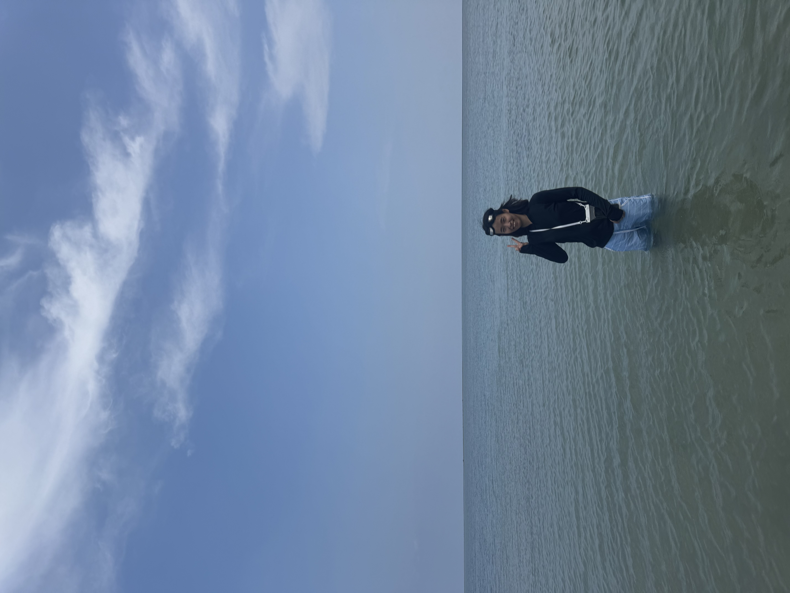
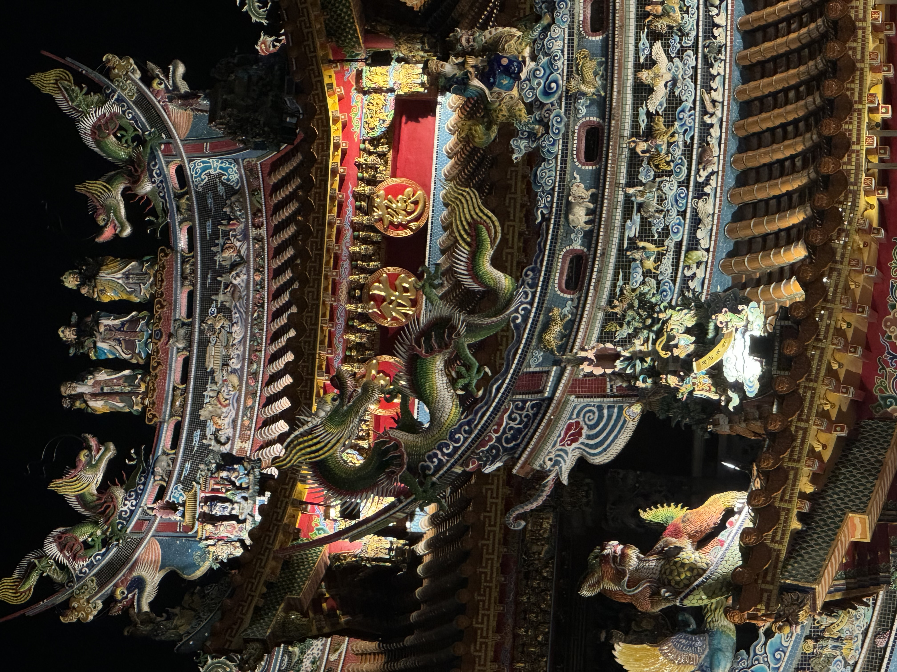
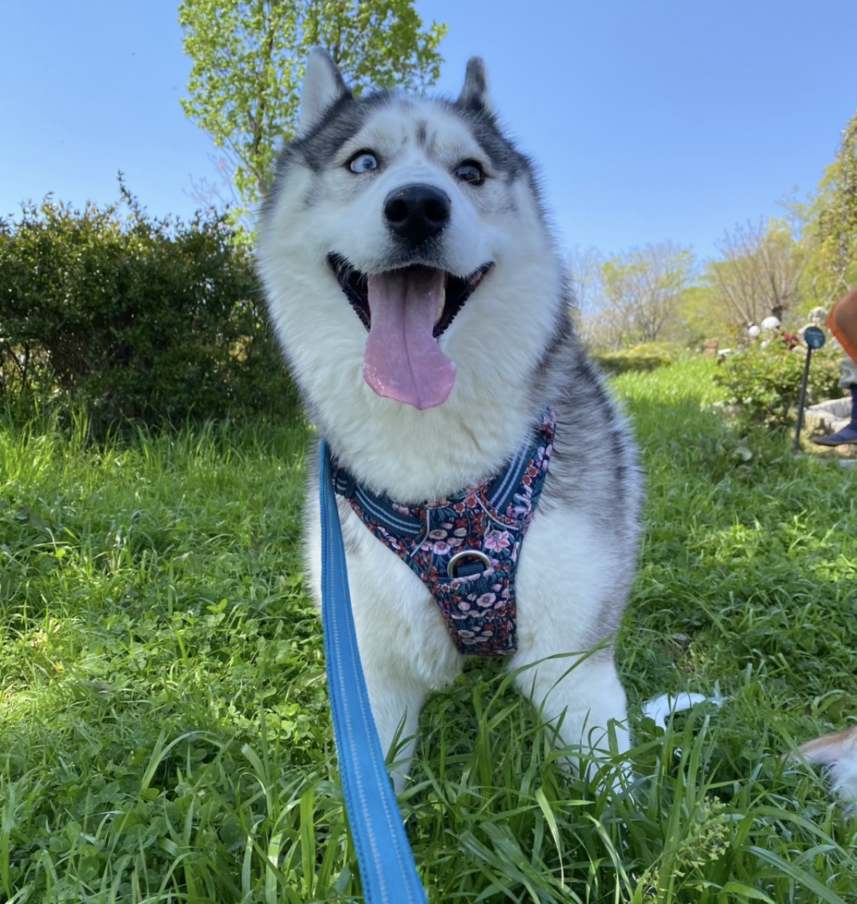
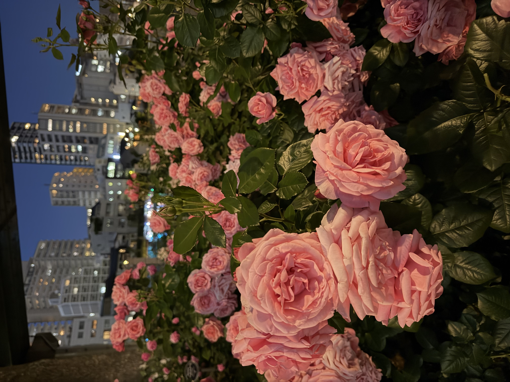

Loading...
Loading...
concept

はじめまして、A.K です。
職業訓練校でWebデザインやコーディングを学び、Webサイト制作やバナー制作、デザインカンプの作成に取り組んできました。
また、幼い頃から動物を描くことが好きで、油絵やアクリル画、デジタルイラストなど幅広い作品を制作しています。
「見る人に伝わるデザイン」と「使いやすさ」を大切にし、一つひとつの作品を丁寧に制作しています。
将来は、WebデザインやECサイト運営、SNS運用などを通して、商品の魅力やブランドの世界観を伝えられる仕事に携わりたいと考えています。
新しい知識を吸収し、すぐに実践することを意識しています。
毎日コツコツ学習を続け、少しずつでも前に進むことを大切にしています。
使う人にとって分かりやすく、伝わるデザイン・コーディングを心がけています。

旅行

ハスキー

植物
Contact
作品に関するご質問、ご依頼、その他お問い合わせは
以下のフォームよりお気軽にご連絡ください。